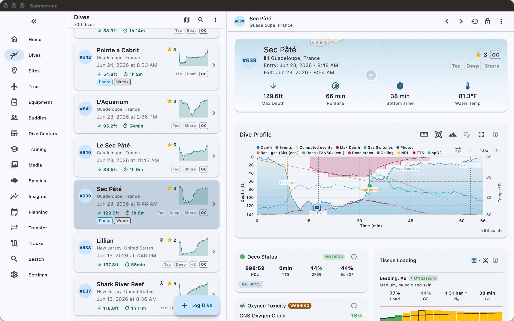
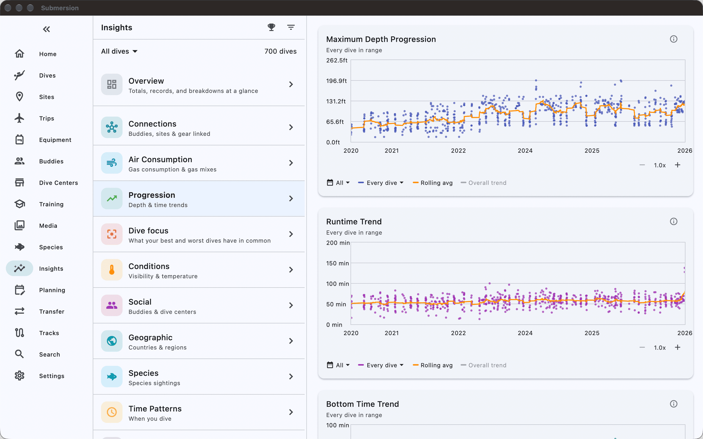
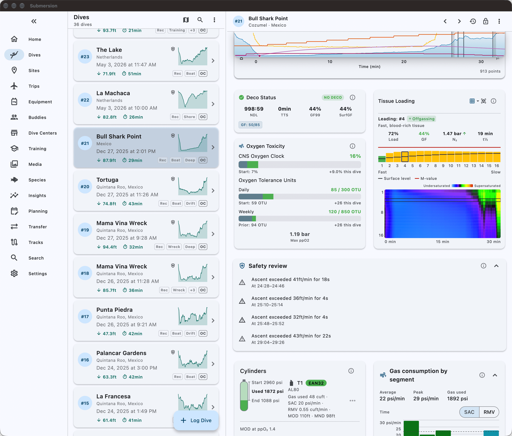
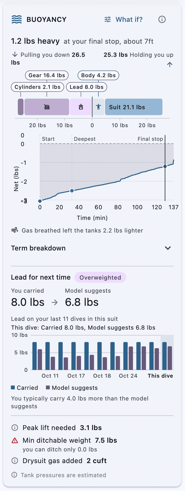
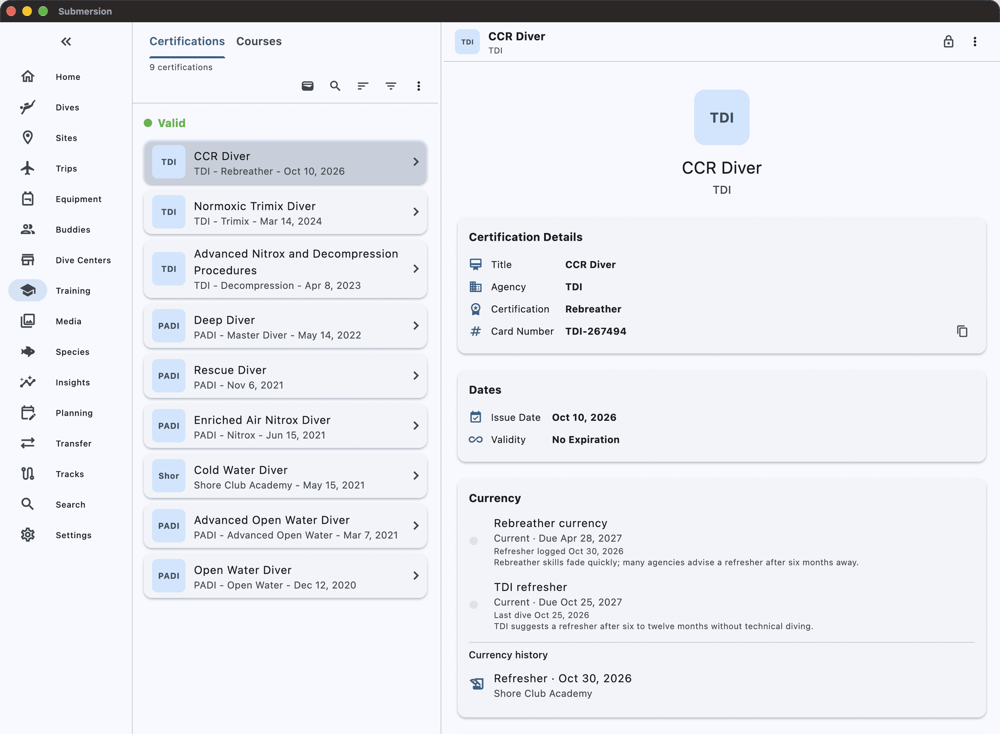
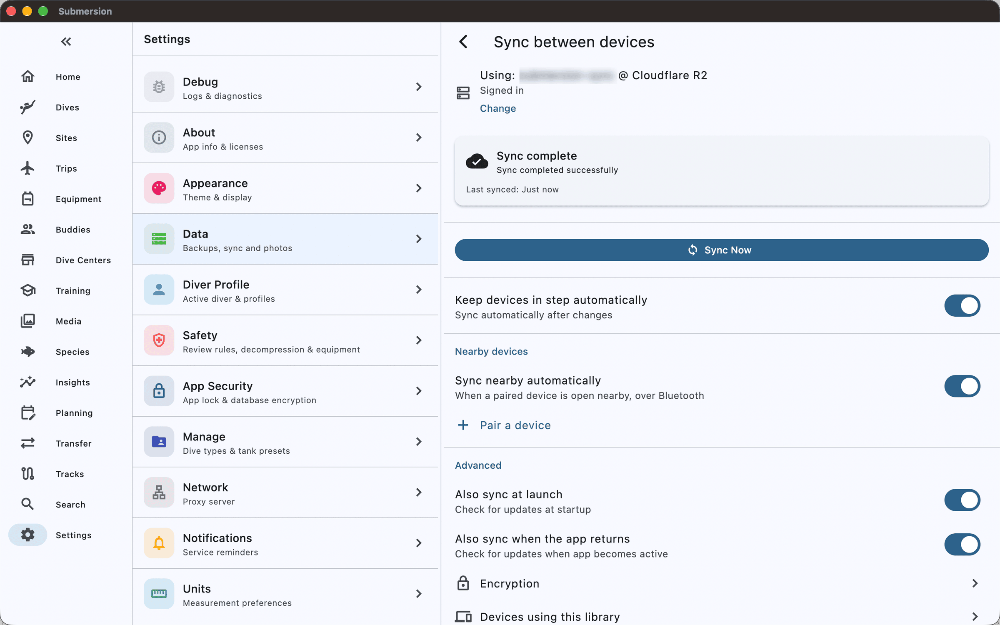
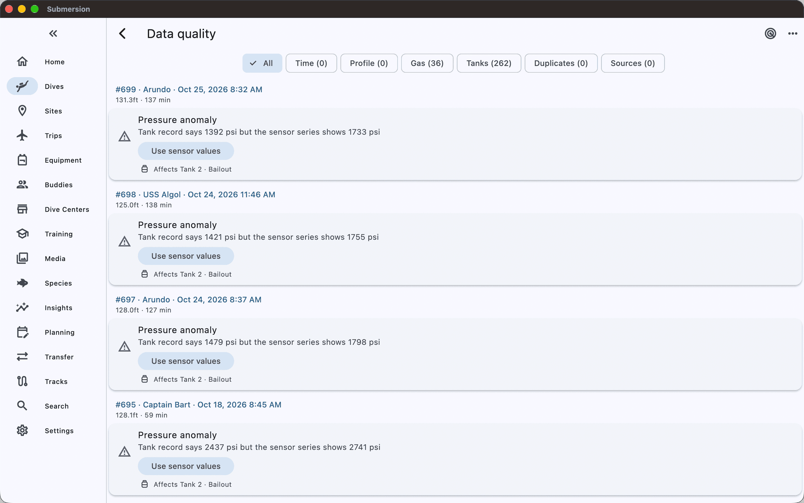

358 supported models
Support comes from libdivecomputer and covers 38 manufacturers. iOS supports Bluetooth only. See the tested models by platform.
Free · Open source · iOS · Android · macOS · Windows · Linux
For recreational and technical divers, Submersion downloads 358 dive computer models, analyses each profile with Bühlmann ZH-L16C, plans open-circuit and rebreather dives and tracks equipment service. It is free and open source under GPL-3.0. Your data is stored on your devices and synced only through storage you choose.

Submersion downloads, logs and analyses every dive, and keeps sites, trips, photos and equipment together.
Each dive gets a safety review. The planner handles open circuit and rebreathers, and every item of equipment has a service schedule.
Submersion has no accounts or servers. Sync uses your own storage, and all data exports to open formats.
The whole dive
Submersion covers a dive from the computer download to long-term statistics. Every field is optional.
Download and import
Submersion downloads over Bluetooth LE and USB. After the first download only new dives transfer, and known computers connect automatically.

Support comes from libdivecomputer and covers 38 manufacturers. iOS supports Bluetooth only. See the tested models by platform.
A download that matches an existing dive is shown beside it. You can skip it, import it as a new dive, replace the earlier source or merge both computers into one dive.
Submersion imports files from Subsurface, MacDive, Shearwater Cloud, Diving Log, DAN DL7, UDDF, Garmin FIT and CSV. Suunto, Garmin Connect and divelogs.de import by signing in.
Scanned logbook pages are read with OCR for review. On iOS, Apple Watch underwater workouts import with depth, temperature and heart rate.
The log
Each trip has an itinerary and a page per day, with the day's dives on a map, a timeline and the photos.

The Home page shows totals, recent trips, overdue service and the latest profile.
Weather is added for the date and location. Tides are calculated offline from a global model.
Each dive records buddies and their roles, with signatures.
Search accepts plain words, for example "Bonaire last year".
Sites and species
Species are identified on the device in photos, and tracked through video with labels.

The bundled catalogue includes 20,999 sites and 3,593 dive centers from OpenStreetMap and other open sources. Map regions can be saved for offline use.
Site terrain is shown in 3D with depth contours and steep walls, where bathymetry is available.
Photos and video are matched to the dive by capture time and placed on the profile at their depth. Underwater colour correction is built in.
Photo identification runs on iPhone, iPad, Mac, Android, Windows and Linux, and video identification on all except Linux. It needs a one-time model download, and 8 GB of memory on Android.
Analysis
Any point on the profile shows the deco status, oxygen exposure and loading of all 16 tissue compartments, calculated from the profile.

The model uses gradient factors and tracks nitrogen and helium. A heat map shows all 16 compartments over the dive.
Each cylinder lists its mix, start and end pressure, gas used, SAC, RMV and MOD.
Downloads from every computer worn on a dive attach to that dive and can be overlaid on one chart.
Playback supports about twenty overlays, from ppO2 to gas density. The profile can also be viewed in 3D.
Insights
Twelve pages of statistics cover depth and time trends, air consumption and conditions. Connections maps how sites, trips, equipment, species and buddies relate.


Maximum depth, runtime and bottom time are charted per dive with a rolling average.
There are nine built-in maps, such as trips and people or sites by species. Any site, buddy or item of equipment can be placed at the centre.
Observations note changes such as dives getting deeper or longer than the previous year.
Personal records such as the deepest and longest dives have their own page.
A safer diver
Submersion reviews dives, calculates plans and tracks equipment. It is not a dive computer and does not replace training, a buddy or your computer.
After the dive
Each dive is checked for fast ascents, missed deco and safety stops, sawtooth profiles, a high surfacing gradient factor, late gas switches and isobaric counterdiffusion. Findings show the time and the value.


Findings are graded info, caution or significant. Each rule can be turned off.
Net buoyancy is modelled across the dive, with a suggested lead weight for the next one. What if recalculates for different lead, water or exposure suit.
CNS and OTU are totalled per dive, per day and over seven days.
NDL, deco stops, TTS and CNS can each come from the dive computer or from Submersion's calculation.
Before the dive
Plans for OC, CCR, SCR and pSCR are built segment by segment. The deco schedule, gas consumption and contingencies update with each change.

On loop plans, bailout gas is checked against the worst point of the dive, which is marked on the chart.
Deeper, longer and lost-gas variants are calculated, along with a range table.
Dives planned as a series carry tissues, CNS, OTU and cylinder pressures forward.
Calculators cover MOD, best mix, MND, consumption, rock bottom and gas density. The blender uses real-gas fills.
Equipment
Each item has service intervals by date, dives, hours and exposure to salt, cold and oxygen. Equipment sets are shown on a diver figure with numbered items.

Regulator service is due at 365 days or 100 dives, or after 50 cold dives. O2-clean intervals count hours on high oxygen.
A short post-dive check-in feeds ten rules that flag equipment trends.
Cylinders and equipment can carry QR or NFC tags. Without the app, a scan opens the cylinder's passport or the item's details on this site.
Transmitters are linked to their cylinders. Service and inventory reports export as PDF.
Ready to dive
Each certification shows its last use and when a refresher is due. Pre-dive checklists run from templates, and the emergency card works offline.

Built-in rules cover rebreather, decompression and other certifications. Custom rules can be added.
Templates include a BWRAF check, GUE EDGE, a CCR build with O2 cell linearity checks and gear packing.
The card holds emergency numbers, nearby chambers, contacts and medical notes, and works offline.
A no-fly countdown runs from the last dive using the selected published guideline.
Your data stays yours
Submersion is free and open source under GPL-3.0. It has no account, ads or subscription.
Storage
Data is stored on your devices. Sync runs through Google Drive, Dropbox, S3, WebDAV or Git, or iCloud on iPhone and iPad, with optional end-to-end encryption.

Paired devices sync over Bluetooth without a cloud service.
The database can be encrypted at rest, and the app locked with a password, Face ID, Touch ID or Windows Hello.
A backup is made before every database upgrade. Scheduled backups can go to a folder or cloud storage, optionally encrypted.
Photos and videos are linked from your library or folders, not copied.
Export
Dives export as UDDF 3.2, CSV, Excel or PDF logbooks, and sites as KML. The data quality check flags records that disagree with sensor data and offers a repair.

Raw dive computer data is kept, so dives can be re-parsed when the parser improves.
Every edit is logged with its previous value and can be reverted by field or by operation.
On desktop, an AI assistant can access the logbook through a local server with a token. Proposed changes are previewed before they are written.
The source code is on GitHub under GPL-3.0.
Download
Free on every platform. iOS is on the App Store and Android is on Google Play. Desktop builds, and the Android APK, are on GitHub Releases.
DownloadAll platforms
Found a bug, or want something added? Open an issue on GitHub. For anything else, support@submersion.app.